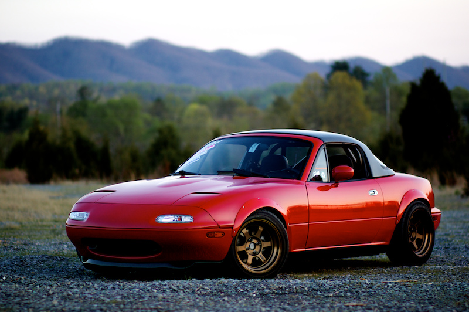

Mazda MX5
Oder auch Miata, wie er in Amerika heisst. Er wird seit 1989 produziert und ist immer noch fester Bestandteil der Mazda- Produktpalette. So existieren bereits diverse Modelle. Wir werden uns hier allerdings auf den Typ NA konzentrieren.
Der Miata ist, plump ausgedrückt, ein Roadster mit zwei Sitzplätzen und Popup-Scheinwerfern. Der Typ NA wurde von 1989-1998 produziert und ist somit ein Youngtimer. Agetrieben wird er von einm Reihen-Vierzylider mit entweder 1.6 oder 1.8 Litter Hubraum in Verbindung mit einem handgeschalteten 5-Gang Getriebe. Dies bedingt eine relativ niedrige Serienleistung. es sei allerdings nicht gesagt, dass Umbauten des Serienmotors jenseits der 300PS Grenze nicht möglich wären.
Solche Leistungssteigerungen werden meist durch das Verbauen eines Turboladers erzielt, welcher im Serienfahrzeug nicht vorzufinden ist.